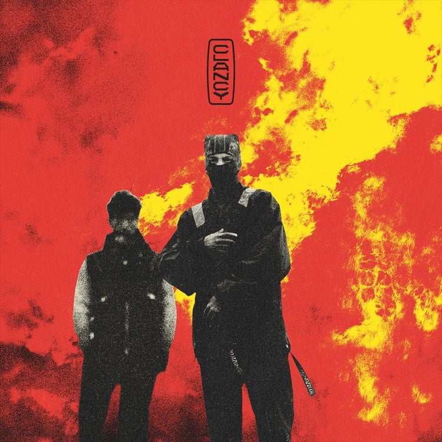
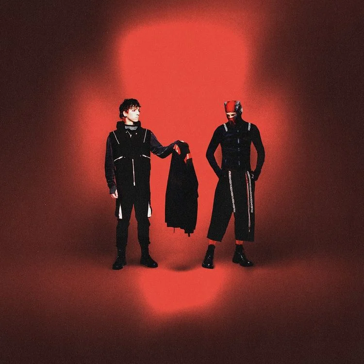
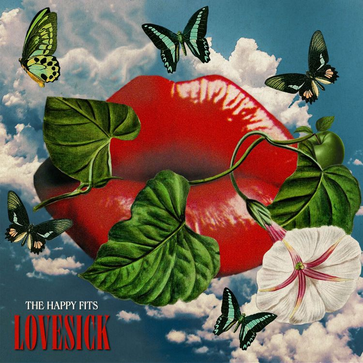
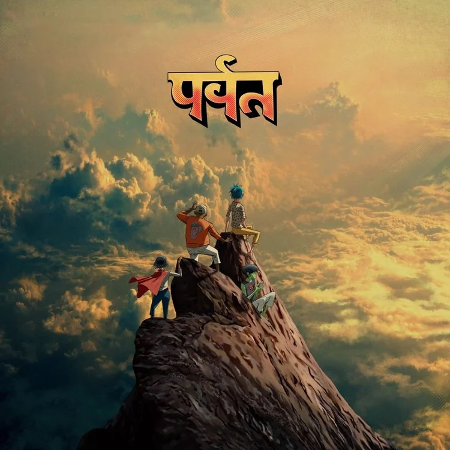
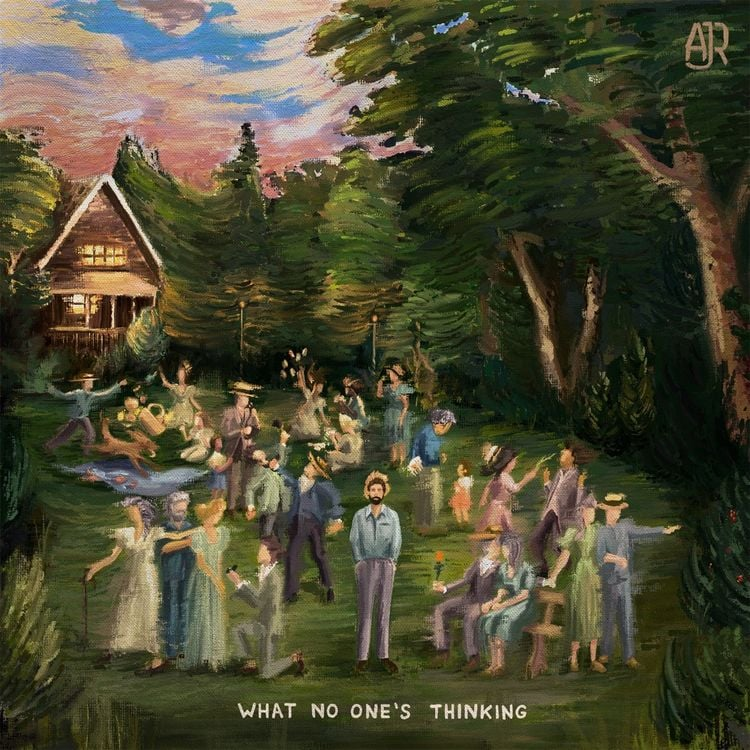

Chad Heaps - IST 250 Portfolio | Click Here To Return To Portfolio Homepage
Welcome to Spinning Vinyl Record, below is a small fraction of our complete collection! Though these are some great albums that have come out since 2024!
See more about each album in the table below!





| Artist Name: | Album Name: | Release Date: | Price: | Info: |
|---|---|---|---|---|
| Twenty One Pilots | Clancy | May 24th, 2026 | $14.98 | Clancy is Twenty One Pilot's return to music after their Covid Album Scaled and Icy. This album was made to focus on their 10 year story they've been telling within their music. This album includes hit Single's Overcompensate and Next Semester |
| Twenty One Pilots | Breach | September 12th, 2026 | $13.98 | After telling their fans that their 10 year story was over, they breached their fan's trust. But they have returned for one more album which is a direct sequel to last years album Clancy. Breach flips the tone and vibe of their previous album giving a whole new listening experience for fans and newcomers! |
| The Happy Fits | Lovesick | September 19th, 2026 | $14.99 | With two new members in the band, The Happy Fits return back from their hiatus to create a new album that changes from their previous style to hit new audiences while also keeping the same style that gave them their start. |
| Gorillaz | The Mountain | February 27th, 2026 | $12.99 | This new album takes a darker tone for Gorillaz. Focusing on the ideas of living and accepting one day you will have ot leave this Earth, this album is a emotional journey where you will hear songs about losing loved ones to accepting your fate |
| AJR | What No One's Thinking | September 5th, 2026 | $8.99 | AJR after their successful album The Maybe Man, have returned to bring a new EP, which follows the naming scheme of their 2016 EP What Everyone's Thinking, This EP includes the song The Big Goodbye which was played everywhere when it was released. |